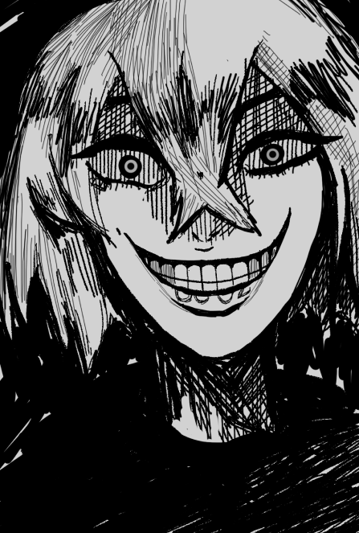

— И пережить там два часа, — заканчивал рассказ мужчина в
маске.
Разношерстная толпа хранила напряжение.
— Далее по одному вы пройдете на локацию, где и начнется
испытание. Предварительно все получат парализующие ошейники.
Следуют они следующему правилу: “Выжить. Убить. Одно исключено.”
Через два часа эта арка загорится красным. Первые восемь прошедших
побеждают. Оставшиеся тоже подходят, чтобы снять ошейники.
Пасмурно. В меру теплый ветер придавал ощущение важности данного
мероприятия (непонятно, каким образом). Более тридцати человек
внимали неизвестному оратору. Рядом располагалась часть крупного
разрушенного города, вход в который открывался огромной аркой.
— “Тайтан Нотэ.” Столица павшей цивилизации титанов, а это - ее
руины, — улыбнулась светловолосая девушка, сидящая на каменной
руке. Кисдез. Метка “00-02” на нижней губе. Демоническая маска,
свисающая у груди. Я уже видел это самоуверенное лицо. Она мало
смотрела в нашу сторону, но, по-видимому, прекрасно все
слышала.
— Тридцать один человек: .., — в этот момент мужчина в такой же
маске, как у Кисдез, начал перечислять позывные каждого участника
Турнира Фракций, — Ватанохантер?
Мне надели ошейник и попросили ждать - я был четвертым в очереди
на проход через арку. Так, мне удастся увидеть направления
движений только троих участников: Арлекина, Павшего и Гострайдера.
Не самый удачный расклад. За мной уже стояла какая-то незнакомая
зеленоволосая девушка. А за ней те, кого можно было бы назвать
одними из самых опасных противников: Клоунти, Сверхтитан и
Валькирион.
С другой стороны, мне доведется выбрать более удобную позицию в
руинах города. Думается, что первый час стоит провести в
каком-нибудь здании на окраине, спрятавшись там. Парочка ловушек
уж точно не помешает, а там как выйдет.
— Психобард. Ты последняя.
Сайка Луни. Далеко не первая наша встреча. Фаворитом не назвать,
но, думаю, успешно пройдет это испытание. Так было всегда.
Удивительно, что только сейчас заметил ее.
— “Выжить. Убить. Одно исключено.” - помните о правиле. С
интервалом в одну минуту вы будете проходить в арку, начиная с
Арлекина. И…
— Добавь Юхта, — перебила товарища светловолосая девушка, по чьей
указке к очереди присоединился молодой человек с темными волосами.
Тридцать второй. Сам масочный парень остановился на неловкой
паузе, будто в непонятках, как назвать нового претендента.
— Одинокий водитель, — сказал тот, прервав молчание. В этот момент
жуткая энергия пробрала меня: взгляд Кисдез, направленный на
толпу. С жутким выражением и широкой улыбкой та всматривалась… как
будто прямо в меня.

ТУРНИР ФРАКЦИЙ: МЯТЕЖ. ОХОТНИК НА ВНУТРЕННОСТИ
1. Они из Королевства Масок
Первым делом в Тайтан Нотэ я направился на восток на окраину
города в дом поменьше: никто не рискнул бы посетить его, зная,
что там может быть подготовленный враг. Такой как я, например.
Конечно, это не удержит безумцев, подобных Клоунти, но точно
задержит таких дурачков как Граф Ду`Рак. Сбежать мне удастся в
любом случае. Да и нет цели побеждать здесь всех направо и
налево.
Касаемо правила ошейников все просто. Если выживаешь, то не
убиваешь. Если убиваешь, то не выживаешь. Неожиданное правило
от Кисдез, но какой-нибудь недоумок его точно неверно поймет.
С другой стороны, не совсем понятно, что будет если я кого-то
убью. Меня парализует ошейник. А дальше? Если меня в
парализованном положении кто-то убьет, его ошейник не будет
парализован? Есть вероятность, что Кисдез меня лично придушит
своей большой…
— *шорх*.
Слышу. Кто-то рядом. Выбранный мной дом был в максимально
приемлемом для подобного места состоянии. Ловушки были расставлены
на всех трех этажах: у окон, на лестницах, - парочку наколдовал
даже в проходах. Сам я расположился на первом этаже в помещении с
одним окном, выходящим на север: из него ничего не было видно
из-за особенностей местности, однако вполне успешно можно было
сбежать. Все же в случае драки мне тоже удастся постоять за себя.
Из-за прозвища мой небольшой пояс хранил в себе несколько средних
кинжалов, которыми я обычно не пользуюсь. Так же в моем арсенале
была магия стандарта и условий: с помощью второй я как раз
расставил ловушки, - а основа моего боевого стиля заключалась в
призыве элитных доспехов и боевого копья. Так уж принято у…
— *шорх*.
В середине дальнего коридора появился облик кролика.
— Фу-ух, — спокойным выдохом встретил я неожиданного гостя.
Странно. Что в подобных руинах делает кролик? Да и как он? Кто
мог? Из-за незнания всех участников Турнира, боюсь, это может быть
чьей-то способностью: из всех мне известных никто не может
управлять кроли…
— Вот ты и попался, дорогу-у-уша, — веселым голосом сказала
девушка позади меня. Что-то острое уже было у моей шеи. Не
успеть.
— Уно…
— Ну, может, уберешь ловушку уже?
— А?
Позволив мне развернуться, девушка расставила ноги на ширине плеч
и, наклонившись, знаками “мира” утыкивала свои щеки.
— Сайя?..
[События происходят после Турнира Фракций 3 на Данго Острове. Чем
же занимается Широго?!]
— Вот оно что.
Объединившись, мы заняли соседнее здание к западу от предыдущего.
Восемь этажей располагали большей опасностью, однако отсюда было
видно если не самую крупную, но точно не маленькую часть Тайтан
Нотэ. Неожиданным компаньоном оказалась уже представленная
Психобард Сайка Луни. Похоже, она тоже не сразу заметила меня,
поэтому естественным было ее желание нагнать меня в процессе. Как
та поняла, что я нахожусь здесь? Это было настолько очевидно?
Сомневаюсь, что с дальнего конца очереди она могла заметить
направление моего движения.
— Что ты тут? Охотишься на Кисдез? — прямо спросила Психобард
после предоставления информации по поводу расположения некоторых
врагов. Например, по пути сюда Сайка заметила Куколдуна и Павшего.
Павший даже не пал. Вот, блин.
— На ее внутренности, — пошутил я. Девушку порвало. “Сайя, тише,
блин.” Лучше обезопасить нас воздушным пузырем магии стандарта. Не
хватало, чтобы нас еще заметили. Кстати говоря, кролик пропал.
Может, почудилось?
— Не перестаю удивляться ироничности твоего “Ватанохантер”.
— НИКТО. ВЫ СЛЫШИТЕ?! НИКТО! — послышались крики с улицы.
— Кхм, да, моей задачей является Кисдез. Однако она слишком опасна
для того, чтобы наш отряд пытался ее поймать или что-то вроде
того. Просто собираем информацию.
— Понятно. Хотя мои цели еще более изощренные. Ы-хы-хы-хы.
— Даже часа не прошло, а ты уже… — протер я рукой лоб. — Самое
сложное еще впереди. Не могла бы?..
— Гонки, значит? — крякнула Сайка. — Скоро надо будет принимать
врагов с тыла, а позже возвращаться на север к арке, — зевнула та.
— Вот морока.
На самом деле, парень в маске повторял правила ровно три раза.
Каждый раз они дополняли друг друга. Так что приходилось напрягать
мозги с первой секунды моего решения участвовать в этом фальшивом
Турнире Фракций. В первый раз он упомянул важность появится в
центре города и забрать кое-что, без чего арка не будет считать
прошедшего за победителя.
— Хочешь сказать, ты уже забрала что ли?..
— Х-а-а-х-а-а-а! — громко брякнула Психобард, ухмыляясь моему лицу
с гримасой категорического удивления. — Смотри. — некая
опоясывающая печать окрашивала ее запястье.
А я о чем? Она всегда умудрялась выполнять все важные вещи, пока я
этого не видел.
— И как? Там реально был ОН?
— Угу-м. Но ОН почти не двигался и показался мне несколько
отрешенным. Ну, по крайней мере, сначала. Потом я убежала. Но
зрелище было: во! — затыкала большими пальцами в свои щеки веселая
девушка.
Что-то в ее словах мне показалось странным. Однако я моментально
развеял подозрения и уставился в себя. Не то чтобы я рассчитывал
на поддержку или был сильно рад тому, что мы с этой прекрасной
девушкой вместе направимся в центр, но некоторая тревога окутала
меня. С другими хантерами мы не соберемся. Нельзя.
— Ну, не парься-я-я. Сходим к Боту вместе, — потерла Сайка своими
большими пальцами мои щеки. — Я бы все равно туда вернулась. Дело
еще не окончено, — твердо заверила девушка.
— Дело? — ненавязчиво отряхнул я ловкие ручки, ласкавшие мои
щеки.
Атмосфера моментально приняла положение, как будто сейчас
случается какой-то неожиданный невероятный поворот. Ветер за
окнами гудит. Где-то из кустов точно играет эпичный оркестр.
— Идем к Боту.
— ♪ Громо- ♪ гласно! ♪
По вине звуковой волны Нечтожество на мгновение замешкался, однако
тут же проломил очередное здание и скрылся от безжалостной гитары
моей союзницы. Признаться, это было мое первое знакомство с этим
персонажем. Зачем он вообще сказал свое имя?
Не успел я провести краткий анализ происходящего, как в мою спину
через секунду вонзились бы когти одного безумного существа. Одним
всплеском маны мне удалось покрыть свое тело доспехом и
материализовать свое верное копье.
— Клоунти, — еле слышно произнес мой голос. Одним выпадом я
кое-как отразил атаку существа. — Эй, Сайя! Далеко до центра?! —
выкрикнул я громче, чем рассчитывал. Услышать ответ от моей милой
спутницы было бы слишком приятно, поэтому его не последовало.
Надеюсь, она случайно не убьет Нечтожество, иначе без нее убьют
тут меня.
— Ты уже здесь, человек, — прошипело клоуноподобное существо,
скрюченно стоявшее на двух ногах. Если бы проводился конкурс самых
страшных существ, то этот парень точно выгрыз бы себе первое
место. Похоже, Клоунти подразумевал, что мы уже в центре. — Ощущаю
твой разум. Можно говорить. Уже поздно подходить к Боту. Эту битву
мы проиграли, — на запястьях клоуна мне не удалось заметить
никаких символов.
То ли ожидая ответа, то ли просто подобрав момент для отдыха,
Клоунти решил сыграть в “Море волнуется раз”. Ошарашенный я около
минуты пятился назад, пока тот наконец не задвигался:
— Уходи. Время вышло. И... — существо задумалось, развернулось на
четыре конечности и скрылось с нечеловеческой скоростью.
Происшествие подобно этому могло бы заставить меня подумать, что
этот клоун вовсе никакой не серийный убийца, вырезающий
королевские семьи целыми поколениями: я просто усомнился в
реальности произошедшего.
Смертоносный аккорд прозвучал перед падением целой стены у моего
носа. Беруши были бы очень кстати. На упавшем каменном объекте
располагался полуживой Нечтожество. Зачем этот парень носит такую
уродливую маску? Мне кажется, без нее было бы в разы удобнее
огребать от Психобарда.
— На моих глазах совершилось убийство.., — мгновенно
драматизировал я, развеивая доспех.
— Эй-эй! Живой он вообще-то, — кровавые пятна на лице Сайки
придавали особой крипоты ее широкой улыбке. Сильная одышка
свидетельствовала о конце битвы..
Не решаясь на методы, из-за которых крупный парень может умереть,
мы расположили его в соседних развалинах, закрыв безобидными, но
неприятными ловушками. До конца Турнира он точно не выберется.
— Так, и где Бот? — озадаченно вопросил я. По словам Клоунти мы
были уже в центре, однако я не могу распознать ничего похожего на
огромное бронированное существо.
— Все верно, нам сюда, — поманила к себе Сайка.
Очередная крыша, значит?
С высоты десятого этажа нам открылась огромная центральная
площадь, в середине которой виднелось подобие полукруглой стены.
Вся местность проигрывала нотки апокалипсиса: разбросанные камни,
обломки камней и каменная пыль. Ну и пейзаж. Там же на пьедестале,
на которых обычно строятся памятники, сидел он. По рассказам моей
подруги совсем недавно это существо не подавало никаких признаков
активного существования. Однако теперь Бот пристально наблюдал за
всей площадью и источал сумасшедшую энергию.
— Ха. Значит, время истекло, — злая ухмылка исказила мое лицо. Вот
они, слова Клоунти, значит.
Часть испытания была в том, чтобы взять некое магическое
заклинание себе на запястье, что располагалось в центре города
прямо перед титаном. Но, похоже, стоило этим заниматься в первый
час, когда Бот не был активен. Все, кто решили сделать это во
вторую половину испытания, теперь не преодолеют гнев этого
существа. Сейчас он похож на собаку, у которой кто-то стащил
косточку, однако пес не может просто отойти от своей будки.
“И что нам делать?” — задумался я.
Бот - один из древнейших Титанов. Поговаривают, что их всего три.
Лет так тридцать назад титаны были передовой цивилизацией. Никого
равного им среди всех континентов. При этом совершенно обычные
люди, но безупречно умные. Хоть подобная глубина развития их и
погубила. Невероятный катаклизм постиг их остров, а сейчас на нем
мы и находимся. Так же это стало причиной появления Орудий Смерти.
На самих титанов это повлияло так, что они стали гигантскими
мутантами. Хотя большая их часть погибла в момент катастрофы. Так
вот некая троица из них отличается от всех остальных. Аномалии.
Первый - Зеро, нумерованный [00-00], которого не так давно
выпустил Варден из Вандерленда. Второй неизвестен, а третий…
— Сайка?!
Не успел я опомниться, как Психобард уже преодолевала половину
площади, поспешно направляясь в сторону Бота. Как и подобает
вежливому кавалеру тот уже смотрел на нее.
“Что она вытворяет?! Возвращайся, черт тебя побери!”
Что делать? Попробую помочь - могу поставить под риск все свое
нахождение здесь. Что б тебя!
— Пять. Опасность в центре, есть помощь?
“Один. Ватано, нельзя, ты остался один,” — прошипел голос из
передатчика.
— В смысле один? Уно?
Оборвал связь. Трое наших погибли? Но как? Здесь же нельзя…Черт.
Если трое наших погибли, то около трех врагов должны быть
обездвижены. Нет. Все еще слишком много противников. Или кто-то
обошел систему? Или... я неверно трактовал ответ шифра. Хотя
вполне вероятно, что многие остались без магической печати.
Значит, попытаться взять ее здесь и сейчас - единственный путь.
Существо высотой в метра четыре направилось прямиком в сторону
девушки с гитарой. Не успела та как следует засмеяться, как спину
титана поразили мощные залпы магии. Страстный напор заставил
великана опереться на одно колено. Прыжок. Психобард уже готовила
свою атаку:
— ♪ Громо- ♪ гласно! ♪
Звуковая магия, направленная сверху вниз, смачно заставила Бота
поцеловать землю. Только титан мог принять эту атаку головой и
остаться в живых. Твердое падение на ноги не дало повода
Психобарду заткнуться:
— Я ЗНАЛА. — острая нога впилась Боту прямо в голову. — ЗАЧЕРКНУТЬ
“ВЫЖИТЬ”, ЗНАЧИТ “УБИТЬ”. А ЕДИНСТВЕННЫЙ, КОГО МОЖНО УБИТЬ, ЭТО
ВЕДЬ ТЫ? — концентрируя огромный запас сил, Психобард вкладывала
их в последние слова, — В ЭТОМ И ЗАКЛЮЧАЕТСЯ… ♫ ПОБЕДА?! ♫
Поверхность титана как будто начала крошиться, находясь под таким
невероятным давлением. Отпрянув назад, Психобард наблюдала как
залпы очередной дальнобойной магии впитывались телом титана.
Куколдун с запада. Сентри с севера. Оракул-кинг, Агент Л.О.Х
где-то там же. Это не было магией стандарта. Похоже на какие-то
заготовки в виде свитков. А значит, долго продолжать в таком духе
они не смогут. Да и как они вообще действуют настолько сообща? Ты
мне что-то не сказала, Сайка?!
Как бы то ни было, это не помешало титану снова встать. Та
ненависть, с которой он оглядывался, придавала мне чувство, что
его обидел именно я. Несправедливость. Как заговорчески дворовые
мальчишки все вместе издеваются только над тобой. Правда, этот
парень сможет постоять за себя.
— Почти у цели, — прошептал я своему ангелу-хранителю.
Очередные заряды магии уже не действовали на титана как раньше.
Небольшое затишье позволило Боту сократить дистанцию между ним и
Психобардом, однако та, такое ощущение, была готова ко всему:
— ♫ Воин, что один в бою остался, ♫ внемли песне моей.., —
расставив ноги на ширине плеч, Сайка готова была доверить все
одному аккорду. — ♫ ГРОМО- ♫ ГЛАСНО! ♫
Мой план заключался в следующем. Если я не могу добраться до
середины пешком, то тогда быстрее всего будет полететь. Так,
забравшись на десятый этаж, мне оставалось только докинуть свое
копье до центра. Расстояние очень не маленькое и, честно, даже не
знаю удастся ли добросить. Просто вложу максимум силы.
— ВАЛВ! КАСТ! — концентрация магического запаса и моих физических
усилий вытолкнули копье на центральную площадь. На огромной высоте
было необходимо переместиться к нему по принципу кротовой норы.
Этим маневром я просто сожму пространство между собой и копьем.
Такое можно провернуть, только в пустом месте. — Щ! — с грохотом
уже приземлился я.
Сильно поднявшаяся пыль несколько мешала, но все же мне удалось
увидеть это магическое нечто. Некий артефакт, лежавший на
постаменте, подсказывал поднести к нему руку, на которой тотчас
появилась печать: такая же как у Сайки.
— *хрусть*, — пронзил площадь чересчур громкий звук.
Конечно. Я же заметил это краем глаза. Так почему не уделил
достаточно внимания? Да. Теперь картина полностью сложилась у меня
в голове.
Пока я возился с приземлением и артефактом… Предназначенная Боту
атака сорвалась. Сайка не смогла поразить его своим аккордом и
оказалась лежащей прямо у его ног. Виной тому был неизвестный, что
сбил прием Психобарда с востока. То есть оттуда, откуда мы пришли.
Следующая сцена показала мне, как одним движением титан сломал мою
недавнюю спутницу. Этот кулак не был полон правосудия или мести.
То лишь были отчаяние и ненависть.
Тем же способом я отправился на запад. Убив Сайку, титан с
ужасающей силой кинул ее труп сюда. Удивительно, но он убил им не
только Куколдуна, но и какого-то парня в противогазе. От прежде
милой моей недавней спутницы даже толком ничего не осталось.
Достаточно представить, что тут все было в мясе и крови, как этого
хватало, чтобы стать вегетарианцем.
Чтобы оставить память о погибших, я промочил свои пальцы в
нескольких лужах крови. Возможно, благодаря этому я смогу
сохранить информацию о них. Желательно о Сайке, конечно. Может,
клонирую ее, и сделаю своей рабыней. Позитивные мысли на этом
заканчивались.
Буквально через тридцать минут, мне нужно будет пройти через арку:
так, я обеспечу нам победу. Никто не погибнет зря. Вся сложность
заключалась в том, что я не смогу еще раз использовать копье для
настолько масштабного перемещения. Честно говоря, некоторое время
я уже отсиживаюсь в здешних руинах, чтобы хоть как-то восстановить
силы с помощью стимулирующих средств и зачарованных напитков. Из
плюсов: теперь я знаю, почему раньше не пользовался такой техникой
бросания копья…
— Никаких сил не хватит это выдержать.
— Никаких сил не хватит это выдержать.
“Что?” — мгновенно появившийся доспех обратил свою энергию на
личность в тени. Из-за сгустившихся туч видимость значительно
упала. И без того темные тени стали теперь совершенно
непроглядными.
— Кто здесь? — медленно спросил я.
Сложно держать хладнокровие, но вроде получается.
Шуршание листвы. Скрип здания. Вкладывая как можно больше сил в
дыхание, словно это должно было помочь мне быстрее восстановиться,
в позиции полусидя я готовился встретить атаку противника, что так
и не происходила.
— На счет три.
— На счет три.
Именно. Мой противник действительно около десяти минут просто
стоял в тени и ожидал, однако уже поздно. Выскочив в окно за
спиной, я тут же преобразил землю магией условий: стоит врагу сюда
ступить и победа за мной.
— Арлеки-и-ин, — продолговатый тенор доносился за спиной, что меня
никак не волновало, ведь передо мной появился тот, кого звали.
— Вы позвали: я пришел… — практически с самых туч, или мне так
показалось, передо мной шлепнулся очередной клоуноподобный парень,
но не такой как Клоунти. — Арлекина это роль! — Шутовской костюм,
белый грим и немного черных теней. Его грим был взаправду плох.
Однако выглядел он чертовски внушающе. Да-а. Самое сложное будет
сейчас.
— Пятый. Уно, поддержку. Юго-запад.
— Первый. Ватано, принял.
Хвала случаю, Уно ответил. Он сможет оказать только единичную
поддержку, как бы комично это не звучало. Хотя ситуация именно
такова. Арлекин - человек из Королевства Масок. Государство,
которое хорошо описывает “Комедия дель арте”. Подробности про это
далекое Королевство достаточно размыты. Данго Острову нет нужды
взаимодействия с ними, однако Арлекин - самый известный из всех
квартетов Масок. Известия о том хаосе, что он посеял, дошли даже
до нас. Невообразимо. Вандерленд плачет по нему не первый год.
“И вот. Это существо стоит прямо передо мной,” - думал я пять
минут назад, однако теперь мне ясно, что все гораздо хуже. Сразу
двое из квартета. Либо же они всегда так и работали, а на виду
оставался только Арлекин. Неважно. Самое очевидное сейчас - это
то, что позади меня стоял не Арлекин, а кто-то другой. И я его не
знаю. Однако мне не остается ничего иного, кроме как принять бой.
Арлекин уже в ловушке. Остался неизвестный сзади. Поддержка Уно
скоро прибудет.
— Арлеки-и-ин! — сорвавшийся как с цепи Арлекин настолько быстро
сократил дистанцию, что магия еле-еле успела сработать и полностью
сковать его. Однако этого хватило, чтобы я не успевал отразить
атаку сзади.
— Ты, — ловким звериным движением неизвестный блокировал товарища
Арлекина. — Да, это ты. Зря, — шипел знакомый голос.
— Клоунти? — проскрипела искра противоречивых чувств.
— Ты с ними?
— Ты с ними? — снова опередил меня гулкий голос. Ни одного из
врагов уже не было рядом. Какого?
— На это нет времени, человек. Нападение, — как робот отвечал
Клоунти.
Поддержка Уно приземлилась прямиком на конец улицы. Отлично. Нет
времени разбираться в мотивации Клоунти. Хоть он и похож на одного
из Масок, это может служить и причиной, почему клоун может быть
против них. Наложив новое заклинание на землю, я отправил копье на
десять метров вперед, чтобы мгновенно сократить дистанцию. Этого
хватит.
— ЗАЧЕМ?!
Этого хватило бы… Если бы копье не перехватил Клоунти.
— Арлеки-и-ин!
Тут же за моей спиной образовался образ моего врага, что повторно
попался на мою обездвиживающую магию. Чтобы случайно не убить,
уверенным выпадом я в миг сломал ему обе ноги и отправил в полет.
Мало кто выдержит прямой удар такого “рыцаря”. Примерно то же
самое случилось с Клоунти, но не то же. В тот момент, когда он
перехватил копье, его перехватила рыбка покрупнее. В голову с
пробитой дырой всматривался пожилой мужчина, чья трость и часть
одежды были покрыты кровью. Половина его лица была в аккуратном
гриме, другая - закрыта маской. А Клоунти был уже мертв.
“Это победа.”
“Это победа,” - провозгласил я в своей голове. В этот миг ошейник
парализует его. Ударю по голове, чтобы наверняка.
Стоп, а где копье?
Прошло пару минут. Мокрость дождя и твердость земли разбудили меня
от глубокого сна. Удивительно, какой долгой ощущается потеря
сознания.
— Ай, — меня отпустили так, чтобы падать, видимо, было как можно
больнее.
Первое, что я увидел перед собой, был… кролик?
— Тц, тц, тц, — звал его к себе старик. — Это же?.. Что ты
делаешь? — сказал за меня мои слова неизвестный из Масок. — Надо
покормить кролика. А выбрал он тебя. Значит, такой уж у него
сегодня обед, — пожал плечами старче.
— В смысле? — поднялся я, вытаскивая кинжал с пояса.
Хотя это было уже не важно.
Словно тени сами по себе материализовались, меня окружило
нечто.
Стоп. Как этот старик все еще двигается? Ошейник... Что это…
— Что это значит? — перебил мысли старик. — Панталоне давно изжил
себя. Эта роль непригодна для массовых утех. Поэтому, — подошел он
ко мне ближе, — запомни имя мое…
После этого я лишился жизни. Не знаю, как тот старик избежал силу
ошейника. Но что это было? Чертов кролик следил за мной? В смысле
выбрал едой? Предсмертный анализ был ускорен до предела, но предел
стремился далеко не к бесконечности.
Что здесь произошло? Прости, Уно. Мы обязательно узнаем это.
Когда Заплачут…
Ладно, предсмертное “Ха-ха”. Это другое произведение, ладно?
Какого дьявола я разговариваю от лица автора? Вот, что значит,
слова после смерти. Я же уже мертв. Ха-ха-ха.
Последнее, что запомнилось Трейлсу, - это имя его врага.
Панталонте.
2. Специальный отряд
— Разберитесь уже с ними, — прорычал в ответ огромный гуманоидный
крокодил.
Величайшая тюрьма Вандерленд, что совсем недавно подверглась
полномасштабному нападению. Из-за этого оттуда сбежало неприятное
количество заключенных. Разгребая оставшиеся проблемы, Варден
готовился к следующим. В задачи главного тюремщика входило не
только восстановление тюрьмы, но и поимку сбежавших нумерованных.
Нулевого титана отпустили по его просьбе. Все равно никому не было
под силу остановить его. А вот некоторых личностей до сих пор не
могли досчитаться.
— В смысле?! Как?! — рычал звериный голос.
— Да, сэр, объект “04-04” определенно… Сбежала Т_Т…
— Она же только вчера была здесь. А-а-а-а-а!!! — инстинкт вопил о
тревоге. О тревоге нервного срыва.
К старшему в подобном гневе, в котором он норовил посмаковать
головой докладчика, подходить никто не рисковал. Однако один
стражник валвов оказался более принципиален, а все из-за важности
одной новости.
— Хантеры? Да неужели! — уже поднимаясь на этаж выше, Варден
готовился к последнему на сегодня делу. “К последнему же?!”
[Валвы: люди-стражники, проживающие в Валвурионе на Данго Острове.
Охраняют Вандерленд.]
Величайшая тюрьма Вандерленд. Местонахождение: Данго Остров.
Однако! На самом деле, он находился несколько дальше от него: в
нескольких километрах на северо-востоке. Эту тюрьму окружают
жестокие воды Гранд Эскейпа, так что сбежать было бы делом
проблематичным, но не невозможным. Все из-за того, что от
Вандерленда можно было дойти до острова буквально пешком - по
длинному крепкому мосту. Именно поэтому это место считается частью
Данго Острова.
Касаемо основной деятельности тюрьма славится тем, что его
заключенные - нумерованные - самые опасные существа в этом мире.
Из этого не следует, что все здесь преступники, нет. Достаточно
своим существованием угрожать этому миру, как стражи Вандерленда
любыми способами поставят крест на потенциальном обидчике, даже
если он не обидчик вовсе. Не забыв при этом подарить специальный
идентификатор, который сделает из человека нумерованного -
цифровую метку. С другой же стороны, можно быть не очень сильным,
но известным преступником, что тоже способно повлиять на попадание
именно в Вандерленд, однако поймать таких кадров может совершенно
любой человек. Причем не без получения хорошего вознаграждения.
Говорят, на каждого преступника рассчитывается отдельная цена.
Таков Вандерленд.
Лестницы никогда не давались так легко, как в этот момент. Пять
валвов стояли у моего “кабинета”. Уже хорошо знакомый мне отряд
хантеров.
— Заходите, — все данные уже находились под рукой, поэтому не было
смысла тратить время на какие-то особые приветствия. Солдаты это
тоже прекрасно понимали.
— Цель отряда хантеров: сбор информации по нумерованной “00-02”
Кисдез. Все сведения будут на этих носителях, — я передал все
самому опытному из них. — Можете изучить. В бой не вступать.
S-класс реализации - перейти к ней в доверие, что не считается
возможным. A-класс реализации - слежка с подробной отчетностью.
Дальше уже сам посмотрю, как ловить ее будем. Все как всегда,
дерзайте.
Отряд Хантеров. Пять бойцов особой подготовки: Унохантер,
Духантер, Татухантер, Вирхантер и Ватанохантер. От первого
охотника - до пятого. Их тактика боя предельно простая: четверо
бойцов выполняют миссию. Если все терпят неудачу, первый охотник
жертвует собой, чтобы помочь товарищам. Так, когда хантеров станет
четверо, второй из них станет лидером и возможной жертвой. Цикл
повторяется. По сути, только пятый, Ватанохантер, как самый
молодой из отряда ничем не жертвует. По крайней мере, сейчас. В
дальнейшем уже ему выпадет роль Унохантера, и вот тогда ему ничего
не останется, кроме как выполнить свой долг. Когда от тебя
действительно ничего не зависит. Грустно это. Быть Унохантером.
— Ладно. Не подведите, специальный отряд, — усмехнулся я и
скоропостижно ушел. Наконец-то заслуженный отдых. Интересно,
почему Нэли сбежала? Надо предупредить дозорный пункт на острове.
Пусть присмотрятся.
Дозорный пункт на Данго Острове располагался как раз у конца
длинного моста. Своего рода эшелонированная защита: если кто-то
сбегает непосредственно из Вандерленда, велика вероятность, что их
поймают у другого конца моста. Однако в последний раз это не
помогло, ибо при полномасштабном побеге дозор был разбит. По тем
же причинам теперь он более укрепленный и не содержит неопытных
валвов.
Тем временем Хантеры зашли в зал, чтобы обсудить детали. Теперь
это их работа. Вардена оно уже никак не касалось.
3. Чума и токсин
— КХА.
Тайтан Нотэ. Группа людей, слушающая анонимного спикера.
— Что-то не так? — спросил вежливый мужчина в маске.
Похоже, мой нервный потуг перебил очередное высказывание
организатора. Спасибо моей голове, что умеет так хорошо мотать в
стороны.
— Далее по одному вы пройдете на локацию, где и начнется
испытание. В центре города вас будет ждать специальный гость -
один из древнейших титанов, Бот. Вполне себе вероятно, что он
способен нанести увечья, так что будьте осторожны. Через два часа
эта арка загорится красным. Первые восемь прошедших побеждают.
Оставшиеся тоже подходят к арке.
Мы провалились. Унохантер умрет после начала испытания. Побочный
эффект Секрета Времени. Техники, в ходе которой ты жертвуешь
жизнью, чтобы обернуть время вспять. Хватает отмотать на часа два
назад. Вдобавок применивший его может прожить некоторое время в
начале повтора линии, но неизбежно умирает. Следует отметить, что
это не путешествие по параллельным реальностям. Само понятие
времени отменяется. Магическая уловка, требующая огромной
подготовки.
Трейлс. Единственный в этой миссии без особых псевдонимов, однако
даже так меня умудрились обозвать “Охотником на внутренности”, что
созвучно с Ватанохантером. Пятым Охотником. Кишки никому не
вырывал, правда. Остальным же пришлось выдумывать псевдонимы
самим: несокрушимый Ворвор - Вирхантер, псевдозверь-оборотень
Волковолк - Татухантер, гонимый всеми Простодушный - Духантер и
простой Доктор Кот - Унохантер. Да, тот, что скоро умрет.
“Если бы тело не исчезло, я бы точно вынес его отсюда.”
Теперь главное, чтобы он не увидел напрасность своей смерти через
призму наших смертей. Отныне на поддержке Духантер, а нам
желательно не подставить его. Простодушный займет беспроигрышную
позицию в Тайтан Нотэ и оттуда будет выслеживать состояния каждого
из оставшихся хантеров: если умрут все, то и ему придется
последовать за Уно и применить Секрет Времени. Естественно, нас
станет еще меньше, но приобретаемая информация порой дает
необходимое преимущество. Тактика победит большую армию. А состоит
она из информации. Такова теория нашей победы: не количество, а
качество. Такова суть нашего отряда.
Первая провальная миссия. Продолжительный успех приводит к тому,
что рано или поздно ты расслабляешься. А ведь одна ошибка может
привести не просто к ранению, но даже к смерти. Видимо, слишком уж
долго я был Ватанохантером: со следующей миссии я стану четвертым,
Вирхантером, и к нам присоединится новый Ватано. Интересно, есть
ли кто-то, кого подготовили к Секрету Времени? Возможно, какое-то
время останемся скучать в тюрьме. Или дадут работу в
Валвурионе.
— Извини, ты… Ватанохантер?..
Ко мне подошла невысокая стройная девушка с зелеными волосами.
Руками она держалась за свою одежду, а ногами несколько семенила
по полу. Даже отсутствие обуви не дало понимания, кто это (как
будто должно было).
— Нет, — случайно оборвал я. В прошлый раз она не подходила. Что
это значит?
— А… — со слезами на щеках девушка уставилась на меня.
Самое страшное в провале это не смерть, а повторяемая смерть.
Скоро Уно умрет. Исчезнуть-то исчезнет, но перед этим с его телом
произойдет что-то страшное. Не хотелось бы этого видеть. Далее,
если умрет Духантер, Уно придется умереть еще раз. И так при
каждом повторении. Он подарил нам шанс победить, однако это также
означает, что подарил себе шанс умереть… до четырех раз.
К чему это все? Ошибка недопустима, но тогда зачем?.. Не сумев
проигнорировать девочку, каким-то образом я начал это испытание не
один. Извини, Сайя, похоже, в этот раз у меня новая спутница. Хоть
и немного... не того возраста.
[Вот бы прикупить такую же демоническую маску, — подумал кто-то в
толпе.]
Очень странная тихая девушка. Зовут Токси. На вид лет двенадцать.
Как я смог понять, ей пришлось долго гадать подходить ко мне или
нет. Ведь единственным знакомым лицом для нее оказался
неподражаемый Охотник на Внутренности! Имея не самые сильные
способности волшебного аналитика, я все же определил, что девочка
талантлива в магической стезе, поэтому решил пойти ва-банк.
Дополнительная помощь равно дополнительная информация. А это мне
не помешает. Теперь я максимально серьезен.
Западная часть Тайтан Нотэ. Если до этого, направляясь с юга, я
занял окраину восточной части, то в этот раз я изучу весь запад,
север и вернусь через восток.
Без сомнений, Квартет Масок следил за мной. Надеюсь, больше
никакие кролики не будут за мной сталкерить. Так что надо как
можно больше двигаться. Особенно с таким союзником. Обычно девочки
с магическим талантом низвергают из себя невероятные аномалии. Так
что если ей так страшно проводить два часа в заброшенном древнем
городе одной, то, так уж и быть, я составлю ей компанию.
“Т...” — хотел что-то спросить у девочки, но, запнувшись,
погрузился обратно в мысли.
Все-таки зря тогда вместо обсуждения деталей мы сели играть в
“Случайнокарты”: надо было собрать больше информации по возможным
участникам этого фальшивого Турнира Фракций. Многовато
неизвестных, включая эту девочку. Наш отряд явно переоценил свои
силы. Хоп. Резковато схватила меня девушка, спрятавшись за моей
спиной:
— Там, — указала та.
Небольшая площадь, на углу которой стояла пухлая башня - именно на
нее пальцем указывала Токси.
— Я никого не ощущаю, — прошептал Трейлс.
— Пятеро. Вата, их там пятеро!!!
“Пятеро?”
Небольшая поправочка. Направившись на запад, мы, естественно,
затаились в самом первом доме, чтобы дать пройти всем, кто хотел
бы. Нападать будем мы и никак иначе. С выходом последнего
участника мы не останавливались ни на миг. Однако?..
— Что ты… сделала?
— Аа?..
“Почему… я не могу пошевелиться?!”
В какой-то момент я понял, что полностью остолбенел. То ли от
того, что меня коснулась юная босоногая леди, то ли от странной
информации по поводу пяти человек, находящихся в этой локации. Она
же не обманывает меня? Тут же… оробевшая девочка… лишь посмотрела
на меня с открытым ртом.
“А?”
Быстро взяв себя в руки, Токси встала в подобие боксерской позы и
стала рыскать по сторонам, по окнам домов в поиске подвоха со
стороны башни и потенциальной опасности.
— Пятеро же. Пятеро. Вата… — скуля шептала девочка, не снижая
бдительности.
Проникшись мимолетному доверию к зеленовласой спутнице и не
заметив приближения потенциального врага, я подумал, что было бы
неплохо перехватить инициативу.
— Доспех. Копье.
Эффект паралича мгновенно спал, а я сделал рывок в направлении
башни. Она была достаточно широкой, однако в моем запасе был
прием, способный разрушить даже ее.
— ВАЛВ ОБЛИВИОН! — копье вонзилось в прочную стену. Единственный
магический всплеск привел башню в полнейшую нестабильность.
Издавна лучшим способом защиты городов были магические башни,
которые концентрировали в себе множество волшебных частиц,
благодаря которым и волшебники могли атаковать с большим рвением,
и сами башни при должном зачаровании могли уничтожать врагов.
Так, треск, вызванный моей техникой, свидетельствовал о том, что
магические потоки башни были очень недовольны подобным
воздействием и стали разрушать башню изнутри. Если там и правда
кто-то есть, то ему очень не поздоровится.
— Вата! — вскрикнула девушка. — Не могу пошевелиться!
Пока я удивлялся тому, что такая юная девочка унаследовала мой
паралич, та навзрыд умоляла меня о помощи:
— Господин Ватанохантер, пожалуйста! — добавив уважительности, но
при этом не переставая всхлипывать, девушка явно не на шутку
испыгалась. Забавно, но при этом она практически не двигалась.
Стоит подержать копье в башне подольше. Как только заклятие
спадет, противник покажется. Хотя если кто-то быстрый нападет на
девочку, я точно не успею помочь. Интересно…
Оставив копье в башне, я метнулся до девочки, что не могла
шевелиться. Она все еще проходила мой тест на доверие. Так что
одних слез было недостаточно, юная леди. Однако и с выводами
спешить не стоит. Разыгрываю сцену:
— Враги. Где?
— Пятеро же, господин Ватанохантер. Пятеро. Башня. Башня.
— С минуты на минуту башня разрушит сама себя, и тогда мы узнаем,
кто же там, — в этот момент я был готов к атаке девочки. Если эта
ситуация разыграна с целью каким-то образом победить меня, то
сейчас ей не остается ничего, кроме как нападать. Шах.
— Нет. Господин. В башне нет магии. Не выйдет.
“Хм?”
Токси все также продолжала окаменело висеть частью тела в воздухе.
В таком положении точно не получится застыть самостоятельно. Что
она задумала? Может ли это быть ее способностью? А башня? Я точно
чувствую, что она вот-вот должна рухнуть. Что-то в этой ситуации
не так.
— Г-господин Ватанохантер, я атакую их. Коснитесь меня,
пожалуйста, — протянула Токси.
Вот оно. Если бы это была игра, то сейчас мое решение точно
повлияло бы на концовку. Что ж. Если таким образом она спасает
своего Короля и ставит “шах” мне, то это настолько хорошо, что я и
не против проиграть.
— Давай, — после чего я приложил свою руку на стройное плечо
девочки. Если та все-таки нападет на меня со своими союзниками, их
будет ждать небольшой сюрприз.
Вдруг бойкая девушка мигом прыгнула в сторону башни, словно бы ее
потянуло туда гравитацией.
— Токсик… — девушка приложила ладонь к башне. Копье я уже развеял.
— Вейст.
Токсичный зеленый дым стремительно начал поглощать всю башню.
Будто девочка прямиком через ладонь высвобождала волны энергии.
Несколько теней вырвались из башни. Пять? Да неужели. И
направились ко мне.
— КОПЬЕ! ВАЛВ…
Вот черт. Сразу пятеро неизвестных атаковали меня. Или точнее мое
прошлое местоположение. Вскинув копье в небо, а затем в сторону, я
мигом занял более удачную в бою позицию. Не теряя времени, я начал
анализировать ситуацию.
— Валькирион, Сверхтитан и… Ясно. Что с девочкой?
Прижатая за горло к той самой башне, Токси всячески старалась
выпутаться из крепкой руки противника. Ярко зеленый токсин, уже не
стесняясь, окутывал половину площади. Врагом являлся неизвестный
мне мужчина с красным плащом. Неизвестный так крепко держал
девочку за шею, что та была в глубокой панике. За ним стояло трое,
что смотрели в мою сторону, и один… Что за нелепый чумной
доктор?
— Так или иначе.
В одно мгновение Трейлс оказался рядом с лысым красноплащником.
Сбив его с ног, чтобы освободить Токси, стражник быстрым движением
метнулся к парню в костюме средневекового лекаря и схватил его.
— ВАЛВ! КАСТ!
Переместившись вместе с Чумным пациентом на метров пятьсот,
Ватанохантер подтвердил, что остальные четверо. Словно марионетки,
которым оборвали ниточки. Упали.
[“Ах! Ух! Гых!” — стояла Токси и пинала обмякшее тело странного
мужика.]
— Ого. Что и ожидалось от Охотника на внутренности!
Некоторое время спустя мы пробрались в башню, чтобы перевести дух.
Дело оказалось простым. С первого взгляда стало понятно: те
четверо были марионетками чумного пятого. Парень в костюме героя,
дед с повязкой на глазу и известные мне Валькирион и Сверхтитан
были окутаны темными очень вычурными испарениями. За что Чумной
Доктор оказался погребен в черепицу кровли одного из зданий.
Жутким слабаком он оказался, - хотел бы я сказать, однако он
справился с такими сильными противниками как Валькирион да
Сверхтитан, так еще и сверху победил нескольких. Ему просто очень
не повезло с последним противником. Что касается девочки: сильно
пострадала, но я оказал ей помощь. Однако, если бы противник был
сильнее, гарантирую ее смерть.
Так же токсин девушки не подействовал на меня, потому что за это
время она посодействовала моему временному иммунитету. Или как-то
так. То же было причиной, почему газ не подействовал на врагов:
один в противогазе, остальные - под контролем. Ву-аля!
— Щик-щик-щик, — уже некоторое время девочка игралась со своими
пальцами на ногах.
Осталось не так много времени на обдумывание. Тем более, что мы
здесь уже слишком долго. Нужно собираться.
— Вата, — девочка указала на восток, — бой.
Похоже, наши западные посиделки заняли больше времени, чем я
рассчитывал и чувствовал. Либо что-то поменялось. В центре Тайтан
Нотэ шел ожесточенный бой против огромного существа, что вскоре
должно было убить некоторых участников Турнира. С нашей стороны с
помощью волшебных свитков, как я и предполагал, волшебник Куколдун
отправлял заклятие за заклятием прямиком в титана. Рядом же, как
сказала Токси, кто-то пытался сбоку напасть на колдуна, но не
решался. Нам же требовалось просто подождать, когда все это
кончится.
Последних минут двадцати хватило бы, чтобы сделать все вовремя, но
желательно было еще прочесать юг города.
— Уходим.
— Драться... не будем? — печально вопросила девочка.
— Есть дело поинтереснее, — обманул ее я.
Перебравшись через стену, наша команда направилась на юг.
Да. В южной части Тайтан Нотэ дела обходились не легче. На крыше
крупного здания организовалась настоящая потасовка. И, судя по
всему, шла она уже продолжительное время. Друг напротив друга
стояло трое парней. Абсолютно. Молча. Каждый ждал инициативы от
другого. Но никто. Не нападал.
Гострайдер был один из них. Опасный тип, управляющий духами.
— Ваши имена? Назовите! — прокричал один из них. Рядом летала
необычной формы коса, что светилась лунным светом. В целом, он
напоминал жнеца смерти. Но косплей был не очень удачным, как мне
показалось.
— Го… — начал отвечать Гострайдер.
В этот миг ездок на призраках упал, мягко коснувшись земли. Это
произошло за секунды две, но если делать какие-то выводы.
— Он вытянул из него душу, — заключила Токси.
— А?
Второй, смекнув, что дело пахнет писюнами, отбросил гордость и…
видимость? Потому что он буквально исчез с глаз. Или я так
подумал. Однако внизу улицы разразился новый этап битвы. Жнец с
косой в форме полумесяца уродовал улицу, пока второй ловко
уклонялся. То были движения умелого атлета. Очевидно, воин был не
меньшей подготовки, чем сам я.
— Удар повстанца! — отразил тот косу противника в сторону.
При этом Токси не сидела без дела. Пока я наблюдал за битвой, она
порядочно прикрывала нашу спину. Вывод, который я могу сделать за
прошедшие 10 минут - жнец очень опасен. Похоже, правило, при
котором он может сделать с тобой то же, что и с Гострайдером, -
это ответить на его слова. Иначе он бы и этого бродягу уже
замочил. Неприятно, но обход убийств в этом турнире происходит уж
как-то слишком просто. Некоторые получают явно преимущество. Мне
кажется, или Кисдез немножко не подготовилась? Либо же ей просто
все равно.
— Тц, — противники снова встали в боевые позы, готовые вот-вот
разорвать друг друга.
— Брат, ты почему так смотришь на меня? — женский голос донесся из
уст жнеца. Оппонент не выдержал.
— УБЛЮДОК. ДА КАК ТЫ? — прошла только секунда, а речь славного
воина уже закончилась.
— АРГХ, — выплюнул кровью жнец, а его противник смог дернуть
ногой, чтобы не упасть.
[Минутой ранее]
— Токси, жди здесь, — спрыгнул я вниз со своего укрытия.
Первое. Этот жнец слишком опасен. Не ликвидировать такого
противника может стать проблемой в будущем. Второе. Есть у меня
одна идея, которую хочется опробовать.
Честно, я еще сомневался, но женский голос меня вывел из
равновесия.
— ВАЛВ! КАРИСТУС! — в один шаг Трейлс ворвался на поле боя и
пронзил жнеца туда, где полагалось быть сердцу.
— АРГХ.
Как и ожидалось, жизнь не успела выйти из воина, и он не упал.
Отлично. Теперь проверяем второе.
— Твою мать, — матернулся я.
Ошейник не работал.
Передо мной на земле лежал труп. Ну, даже если он каким-то образом
живой, не странно ли то, что я еще не парализован? Боже. На что я
надеялся. Тот, кто накладывал чары на ошейник - полный кретин.
Даже без доспехов, которые по плану должны были, случай чего,
развеить паралич, этот паралич на меня не накладывался.
Не пересекаясь взглядами с повстанцем, я краем глаза заметил, что
он мне кивнул. Так мы разошлись, а я вернулся к Токси.
— Вата! А как же это?!
— Ты про что? — немного разозлился.
— Внутренности, Вата! Внутренности!— Ох.
“Какая же она странная.”
— Какая же она странная.
Жуткий холод пробежался по коже. Токси с удивленным видом сначала
не поняла, что меня так смутило, но, догнав, что своими словами
она попала в точку, некоторое время девочка просто хмыкала.
[Леонидас барахтался во сне. Похоже, то был не самый приятный
сон.]
С печатями по обеим рукам наш отряд ожидал финального этапа.
На удивление в центре не оказалось совершенно никого. Не мудрено,
ведь до конца оставалось около двадцати минут. Правда, непонятно,
куда делся Бот.
В целом, выходило все слишком просто. Судя по счетчику на воротах,
один уже прошел. Очень удобно, что они хотя бы счетчик сделали.
Надеюсь, это не обман и он работает.
— Вата. Чувствую нескольких. Щип-щип. Со всех сторон. Щип-пищ-кищ.
Идут не к нам. Кищ-шиш, — не отвлекаясь от дела, говорила
Токси.
— Сколько?
— Ам, — остановилась девочка. — Не уверена…
— Как это не уверена?
— Их как будто человек двадцать… — замешкалась зеленовласка.
И правда. Если посмотреть из окна, то можно было заметить, как
похожие друг на друга существа стремительно отправлялись к вратам.
Особенно бросалось в глаза то, что облик каждого менялся раз в
секунду. Настоящий скрыт, полагаю, среди них. Не похоже на обычную
магию, однако вот тактика казалось совершенно обычной.
— Ворота так близко, Ва-а-та, — дергала меня за одежду Тоекси. —
Побежа-али то-о-оже.
И тут я понял. Валв каст. Один валв каст, и я окажусь прямо на
финише. Ни у кого не хватит времени остановить меня. Слышу ли я
сейчас опенинг? Определенно. Сейчас каждый. Каж-дый. Ждет, пока
кто-нибудь решится помешать мимикриду. Иначе тот финиширует.
Атакует один. Второй прерывает первого. Третий прерывает второго.
И так далее. Все на страже. Все бдят. Все видят всех. Точка
встречи - клоны того парня. Однако не для меня. Помешать
финишировать мне не выйдет.
— Токси. Бери меня за руку, сейчас мы финишируем, — я приоткрыл
окно. — только закрой глаза.
— Ой… — начала поспешно вставать девочка.
*грохот*
Крыша оборвалась прямо между нами. С появившегося неба спрыгнул
грузный парень. Сверхтитан.
— НИКТО! ВЫ СЛЫШИТЕ? НИКТО НЕ ОДОЛЕЕТ МЕНЯ,
— ВАЛВ! — попытавшись кинуть копье в окно, я только спровоцировал
внимание здоровяка на себя. И он оказался бы достаточно быстрым,
чтобы вмазать мне, если бы не...
— Токсик. Контроль.
Тело Сверхтитана, подсвеченное зеленым, стало двигаться так же,
как и Токси.
— Ах! Кх. Вата!
— Так, Токси, — копье все так же было в моей руке. Все так же в
состоянии закидывания за плечо. Однако я не переместился. Взять
девочку с собой в такой ситуации будет затруднительно, однако я
все еще могу ей помочь. Судя по всему ей не хватает сил, чтобы
свободно двигаться, а между нами не только титан, но и метров
восемь. — Как только я доберусь до финиша, беги по левой стороне.
В центре будут мои ловушки.
“Надеюсь, ты выживешь. Черт.”
— удержание маневра было делом не простым. Лучше бы я просто
опустил копье, но уже поздно.
— Вата, НЕТ! — закричала Токси.
— Тебе нельзя уходить!
— КАСТ!
В мгновение ока копье пролетело все южное пространство. Из-за
возвышенности, на которой находилась арка, кидать оружие пришлось
немного вверх, но в этом не состояло никакой проблемы. Ничто не
помешает мне добраться до финиша.
— *пш* Трейлс, ало. *пш* Все мертвы. Трейлс.
— Ватано. Я на финише. Конец связи.
Переместившись в метре от финиша, я упал прямо перед чертой.
Слова, что выкрикивала Токси, царапали сердце не слабее ножа. Если
бы она не отвлекала, я бы уже победил, но ладно. Осталось пара
шагов.
С финиша на меня смотрел парень, окутанный черным свечением. Это
был не тот чумной. Здесь было нечто... от дьявола что ли.
И тут. Меня парализовало.
Буквально в метре от финиша.
Зеленый токсин начал потихоньку выходить через поры, литься из
ушей, рта, глаз. Токси?! Дышать становилось невозможным. Доползти
жалкие восемьдесят сантиметров - тоже. Похоже, я все-таки был
заражен ее токсином, но так как находился рядом, то обладал
иммунитетом. Но теперь. Раз я от нее так далеко, мое тело сразу
поразило. Тебе сто чертовых процентов стоило мне это сказать.
Что же там сзади? Интересно, а она тоже тут?
О, нет.
В моем арсенале не только ножи и опасные железки, но еще и особо
опасные ловушки. Они накладываются примерно так же, как
используются заклятия из свитков - мгновенно. Поэтому естественно,
что вовремя валв каста я уже наложил детонирующие ловушки по всей
дуге полета копья. Так вот.
Последним мгновением моей жизни было то, как девочка со всех ног
направлялась в мою сторону. Однако успеть ей было не суждено.
Сказал же слева бежать.
4. Демон
— Меня зовут Шелтер, — представился незнакомец.
После второго поражения моя психика не выдержала. Я просто сидел у
врат, ожидая конца состязания. Если некому будет возвращаться в
Валвурион, то и от наших героических смертей не будет никакого
смысла. Так я подумал, потому и сидел буквально у старта, провожая
взглядом каждого вышедшего участника. Теперь никто не скроется от
меня.
Однако в самом начале мне представилась следующая картина: парень,
похожий на растение, прямо на старте начал драться с каким-то
чудищем. Как итог, тот его сожрал. Однако на этом представление не
закончилось. Участники, что стояли в очереди, вместе со мной
наблюдали, как из живота пожирателя начали вылезать ветки и корни.
В итоге, они оба вошли в землю. Стали классным удобрением для
почвы и… На это все кончилось. Так же резко, как и началось.
— Следующий.
Лишь один участник подошел ко мне, сидящим у старта. Ну точнее
как. Обнаружить меня здесь было не просто. Однако он смог. Да еще
и подошел. Сомневаюсь, что кто-то решится драться прямо здесь. Те
два остолопа не в счет. Собеседник представился Шелтером.
— Не думал, что кто-то тоже решит сидеть у старта. Не возражаешь?
— указал тот на место рядом со мной.
Хоть он и выглядел опасно, я позволил ему сесть рядом. Очень
сомневаюсь в его злых намерениях, да и выглядит знакомо.
— Многое ли тебе известно о демонах? — сразу спросил тот.
— В каком смысле?
Шелтер ухмыльнулся и продолжил.
— В общем, каждый клочок земли контролируется. На определенную
локацию приходится по одному… демону.
— Демону?
— Да. Каждый контролирует процесс обмена энергии умерших на
подконтрольной ему местности. Как правило, работу делает прислуга.
То бишь бывшие живые, — устремил собеседник взор на небо. —
Следовательно, демоны всем этим управляют. То, кто будет
перерожден. Контроль блуждающих душ. И так далее.
— ...
— Гипотетически. Хотел бы быть таким демоном?
— Эм.
“Не очень понимаю, о чем он, если честно. Это предложение?”
— Ну-у. Если бы я был демоном... Это было бы скучно... полагаю.
— Именно, — привстал собеседник. — Именно поэтому.
— Что?
— Демоны придут туда. Туда, где есть счастье. Туда, где есть
радость. Туда, где им будет, чем заняться. Туда, где их работа
будет закончена, — ревностно произнес Шелтер.
— Сюда? — спросил я. — “Как будто страшилки в валвгере слушаю.”
После этого парень погрузился в раздумья: ни ответа, ни привета. Я
даже струсил немного. Черт с тобой, дружище, я ухожу.
Молча встал. Молча ушел. А мой собеседник так же молча меня
отпустил. Надеюсь, с ним все будет хорошо, а я... Прогуляюсь,
пожалуй.
[“БУ! Ась? Не тут... Старею что ли?”]
— *пшш* Третий. Ватано, ты остался один.
— Пятый. Да как, Тату? Вир драться разучился что ли? — возмутился
я.
Прошло около получаса с начала испытания, даже с учетом нашего
душевного разговора с культистом. А мой товарищ по отряду,
достаточно давний союзник, уже отбросил копыта. Он же не?..
— Он же не сам себя? Да?
— Ватано. При начале следующего раунда выбирайтесь отсюда, —
серьезно заключил Татухантер. — Эта миссия нам не по плечу.
— …
— Если у тебя есть план получше, предлагай, — закричал охотник. —
Я оценю риски, сделаю все возможное... пока еще жив.
— ...
Конец связи. Татухантер оповестил Ватанохантера о смерти
Вирхантера, выдал приказ и оборвал соединение. Возможно, тот даже
не станет ждать попытки Трейлса и просто использует Секрет
Времени. Осадок не совсем приятный. Одно дело, когда ты решаешь
сдаться самостоятельно, а другое - когда тебе об этом говорят.
Или, по крайней мере, так подумал Трейлс.
— Точно.
Я вспомнил, кем был собеседник. Этот же тот парень, что придет
первым. Как-то сразу в голову и не пришло. Он был несколько
другим. Вроде. Надо проверить.
Вернувшись в начало, я затаился, чтобы найти Шелтера. Удивительно,
но он все еще сидел на том же месте. Отходил я точно на минут
тридцать. Что ж. В этом доме разложу ловушки и буду просто
наблюдать за парнем. Надо знать, что знает он. И тут. На меня
напали.
— Ч-Т-О-Т-Ы-Х-О-Т-Е-Л-О-Т-Н-Е-Г-О?
Обездвиженный и схваченный за горло, я уже чувствовал как глаза
наполняются кровью. Адски черное существо держало меня и
высасывала силы. Ощущение, когда лежишь в кровати в выходной день,
и вот ни в какую не хочешь вставать. Еще пять минуточек... Да
сколько можно быть таким беспомощным?!
— **пшш** Пятый. Тату… — преодолев тягу монстра, я попытался
позвать на помощь.
— Ч-Т-О-Т-Ы-Х-О-Т-Е-Л? Ч-Т-О-Т-Ы-Х-О-Т-Е-Л-О-Т-Н-Е-Г-О?
Ч-Т-О-Т-Ы-Х-О-Т-Е-Л? Ч-Т-О-Т-Ы-Х-О-Т-Е-Л-О-Т-Н-Е-Г-О?
Ч-Т-О-Т-Ы-Х-О-Т-Е-Л? Ч-Т-О-Т-Ы-Х-О-Т-Е-Л-О-Т-Н-Е-Г-О?
Демоническое существо перестало держать меня. Мое тело как будто.
Даже не хочу об этом думать. В общем, шевелиться я не мог.
— Ты… ДЕМОН?
— НЕТ, — утвердил тот и замолчал. Отчасти его облик был похож на
своего хозяина, но по сути это был огромный козлоголовый темный
силуэт, красные глаза которого были в смятении. Он не знал, что
ответить?
— Ко мне, — вмешался необычный парень. Это был Шелтер. Существо же
послушно придвинулось и аккуратно слилось с ним. Печать? —
!@#$.
С определенным энтузиазмом Шелтер обзывал своего демона и
старательно пытался вернуть в меня былую жизнеспособность.
Получилось.
— Фух, — выдохнул я и тотчас отстранился. Броня тоже не
помешает.
— Прости за это. И не пойми неправильно, — Шелтер подал руку. —
Это... мой друг. Он просто несколько... Эм. Я приютил его очень
давно. Возможно, вежливости ему не хватет, но он славный парень.
Правда. Так что. Прости его.
— ...
— Он бывает часто сам не свой, когда нервничает! — парировал
Шелтер острым аргументом.
Сказать нечего. Я просто кивнул и попытался уйти.
— Стой, позволь помочь тебя сопроводить. Похоже, мой демон помешал
тебе взять печать. Так что давай мы на деле загладим вину. На
словах мы все молодцы.
Какие выводы. Шелтер так и сидел у самого старта, потому что его
ручной чертик мог ему принести даже то, что принести нельзя.
Печать, которую надо на руку наложить. Кисдез, ты не могла хоть
немного постараться?
— Может, тогда просто разузнаешь кое-что для меня? — предложил я.
В следующей раунде все зависит от меня, так что если я не захочу
сдаваться, то Вирхантер может просто выжить без меня. Ему не нужны
спасать меня. А сейчас мы все равно уже проиграли. Надо узнать
больше.
— О, ну, можно и так. Что ты хочешь узнать?
— Местоположение всех участников.
— А. Ну, ладно. Секунду.
В момент его облик наполнился энергией. В демонической форме тот
доложил мне все о всех. Сопоставляя факты, я пришел к выводу, что
он не врет. Единственно, я узнал их имена. Одно лучше другого. Тут
все под прикрытием что ли?
В общем, на том и закончилась моя жизнь.
Нет, не от приютившего демона, а от Секрета Времени.
[Следующим возрождением...]
— Меня зовут Шелтер, — представился незнакомец.
— А я Трейлс. Слу-ушай.
— Да, конечно? — вежливо обратил свое внимание собеседник на
меня.
— А ты слышал про демонов?
5. Одинокий водитель
— К, — грубо отозвалось в моем сердце.
Парень в маске не переставал рассказывать подробности нашего
испытания. Улыбка Кисдез и в пятый раз никак не поменялась. Мне
кажется, я бы даже мог влюбиться. Отнюдь!
Время отрабатывать план. Шелтер вне игры, с ним лучше не
связываться, на север, к его демону, соваться тоже не дело. Там же
Луножнец, Гострайдер, Оракул-кинг и Первый Повстанец. Овощебог и
Панжиратель погибают первыми на юге. Даже раньше Отряда Хантеров.
Сентри и Агент Л.О.Х. рядом, будут охотиться на Бота. Итого:
четырнадцать человек. Павший, Арлекин, Мимикриз, Панталонте,
Клоунти, Сверхтитан перемещаются суматошно. Последний, видимо,
таки вырвется из контроля Чумного пациента, раз я его видел в
первом повторе. Валькирион, Легендарный Герой и Новый Пират так и
останутся под чумой на западе. Там же Куколдун и Сталкерист.
Двадцать шесть. Нечтожество - восток. Как показал демон, Граф,
Враг Вселенной и парнишка Кисдез вообще не представляют угрозы.
Тридцать.
Токси не подошла ко мне и в этот раз. Тридцать один.
[“Мизинец. Черт, опять не безымянный.”]
— Пятый. Уно, поддержку. Центр.
— Первый. Ватано, принял.
— Пятый. Всем. Победа будет за нами! Вир согласен.
— Второй. Ватано, ты…
— Третий. Уно, прикажи Ватанохантеру остановиться сейчас же!
Это…
— Четвертый. Тату, ты слишком много говоришь.
— Заткнись, Вир. Сколько раз ты уже сдох первым, а? Может,
расскажешь всем? И что ты задумал на этот раз?
— Если бы они знали, какой ты…
— Молчите. Пусть делают, как считают нужным, — прервал ребят
Унохантер. — Ты справишься, Трейлс?
— …
— Лады. Слуша сюда, Трейлс. Если начнет припекать, — продолжил
Духантер. — Не продолжай и беги.
Варден с нас и в аду шкуру сдерет. — Всего лишь станешь новым
Унохантером. Займешь мое место. А там встретимся в Валвхэвене.
— **пшш**
— Ну, все. Тату расплакался и ушел.
Все засмеялись.
— Ну, я пошел. Прощайте.
— Давайте, пока.
— Удачи, Ватано!
На том связь оборвалась. Секрет Времени больше не способен был
удержать их жизни на этой петле. Спасибо, что хоть поговорили. Что
ж. Мне известно все. Отличный секрет ошейников. Примерные
перемещения всех участников. Осталось лишь сделать все
аккуратно.
Приложив руку к артефакту, я получил необходимую мне печать. В
этот раз Бот был спокоен. Значит, титан активируется после ухода
Психобарда. Возможно ли?
— Э-эй!!!
Тридцать вторая собственной персоной. Отправилась в центр с первой
же попытки. Мне на образование такой тактики понадобилось умереть
некоторое количество раз. Жаль, что она не согласиться стать моей
Духантершей...
— Надо же. Я думала, ты будешь скрываться на окраинах города.
Трейлс? Ты что, поумнел?
— Эй, вообще-то… И не могла бы ты…
Энергичная девушка уже разминала мои щеки своими шаловливыми
ручками.
— Сайя, забирай печать.
— А как же Бот? — озадаченно спросила Сайка.
— Сначала печать, а потом бот. Давай, двигай.
В какой-то мере я не был до конца уверен, но звучало очень даже
неплохо. С помощью копья я выкинул Бота за пределы Тайтан Нотэ.
Это была достаточно эпичная сцена, как я кинул копье
далеко-далеко, коснулся титана и переместился вместе с ним. Так
как падении не было твердым, я даже его не разбудил. Думаю, теперь
Психобард не будет сражаться с ним.
— ЭМ.
— Что?
— Трейлсик. ТЫ ДУРАК?
Ась? Угкх. С левой под дых.
— Это было частью.
Угххх. С правой по ноге.
— Моей.
Акгкхкх. С левой по челюсти.
— Миссии.
Аргкх. С правой... Ну, только не сюда...
Чуть-чуть отстранившись, Сайка приподняла голову. Кажется, я довел
ее до слез.
— Мне нужно было добыть кожу титана. А ты даже не дал мне
попробовать ее отломить.
Теперь понятно, почему Бот приходит в себя. Осмотревшись, все так
же придерживая место между ног, как будто это не даст органам той
области повредиться, я заметил на месте отдыха титана какую-то
шелуху.
— А это?..
— …
— …
— Ю! Ху! Миссия выполнена. Собираемся, Трейлс! Какой ты хороший
парень все-таки! — раскраснелась девушка.
— Слушай…
Возможное будущее определяло ее смерть от руки Бота. Но кто знает,
на что же способен будущий Унохантер?!
“Что же произошло?”
Переваливаясь через обломок стены, я обратил внимание, на какую
глубину свалился.
— Э-э-э-э-эй! Тре-е-е-е-ейлсичичек!
КТО?
— Тре-е-е-е-е-ейлсисчичисчичсичек! Ты там?! — кричала Сайка. Ей
даже в такой ситуации было весело.
— Я в порядке! Иди без меня!
Ответа не последовало. Похоже, она-таки попытается пробраться
сюда.
По пути на запад в один миг земля начала уходить из-под ног. Если
Психобард очень быстро улизнула, то я вот как-то не среагировал и
упал. Если воспользоваться валв кастом, чтобы выбраться, я потрачу
слишком много сил. А, учитывая, что я недавно переместил одного
нескромного титана на приличное расстояние, хотелось бы сэкономить
силы.
*грох* *грох*
Из темных обломков обломков и их обломков вылез крупный
монстроподобный тип. Да, он был среди участников. Так это и есть
подземелье. Теперь понятно, почему трое из участников не
опасны.
— Привет, здоровяк! Скажи-ка мне лучше вот что... — с озорным
настроением мне почему-то очень хотелось над ним подшутить. —
Почему это ты Враг Вселенной? Почему не Враг Туалетной Бочки или
Враг Больших Темных Подземелий? Есть какая-то особая причина? Это
связано с планетами, полагаю? Или, может, со всеми... ленями? Ты
ленивый, да?
— УБЛЮДОК, — кое-как перебив меня, здоровяк направился в сторону
своего врага.
Рывок. Я бы сказал: сумасшедший рывок. Огромный кулак пронесся
прямо над моей голове. Выпад на ноги оппонента не составил формулу
успеха, однако не помешал мне разобраться с ним с помощью
копья.
— Так что? Расскажешь?
Без сознания Враг Вселенной упал на землю. Хоть и ошейники не
должны срабатывать даже после убийств, я не стал рисковать, и
просто вырубил его конкретным таким ударом. Однако это не помешало
мне упасть на землю рядом с ним.
**бзз**
— ...
Ошейник сработал? Серьезно?
— ...
Кисдез... Это. Или... Не мог же он приземлиться смертельно? Не
повезло, так не повезло. Причем доспех не способен развеить
функцию ошейника. Вот такое наблюдение. Остается ждать Сайю.
Главное, чтобы другие двое не добрались сюда.
— ААА!
— АААА! — к моей спине прикоснулась чья-то рука и ответила криком
на мой крик. — Тише, я помогу тебе с ошейником. Меня зовут Юхт.
Юксаланэ Юхт. Одинокий водитель.
Тот парень, которого Кисдез внедрила в наши ряды. Учитывая, как
Кисдез смотрела на нас, неудивительно, что она решила, что этому
турниру нужен свой боец.
— В общем, Кисдез поручила мне раскрыть личности участников, —
сказал как отрезал Юхт. — Она полагает, что определенные участники
- это стражники Вандерленда. За тебя она зацепилась больше всего.
Ты же Охотник на внутренности, да?
— Да. Эм. Зачем ты мне это говоришь?
— Кисдез не знает, но... — Юхт показал на неработающий ошейник на
своей шее. Мой был теперь таким же. — На самом деле, я шпион,
который желает ее поимки. Поэтому разреши сотрудничать с тобой! —
уважительно протянул руку молодой парень.
— Ватано.
— А?— Можно просто Ватанохантер, — ответил рукопожатием на
откровение нового союзника.
Никогда не было такого, чтобы я страдал географическим
кретинизмом, но сейчас я точно заблудился.
Похоже, выбраться из того подземелья было практически невозможным
из-за того, что пещеры были зачарованы таким образом, чтобы
человек плутал по ним, не добираясь до выхода. Мне же со своими
доспехами это было не очень-то и проблемно, впрочем почему-то
сейчас места казались совершенно незнакомыми и я не понимал, в
какой стороне юг.
— Нам сюда, — указал Юхт. Похоже, у него наоборот все уже
прошло.
*ВХЫХ.*
Над головой пролетела знакомая лунная коса.
— Привет, друзья! Назовите имена свои!
Ловким движением Юхт прикрыл мне рот. В миг мы забрались в
ближайший дом.
— Здесь он не сможет сражаться той косой, — дополнил смышленный
парень.
Луножнец. Похоже, Юксаланэ знает про него. Однажды мне приходилось
уже наблюдать за стилем битвы этого ненормального. Как же по нему
плачет Вандерленд. Невыносимо.
— Луножнец. Тот, кого ни в коем случае нельзя допустить до отряда
Кисдез, — говорил одинокий водитель. — Он не просто силен. В этом
есть недочеты, но в ее руках... он будет опасен.
— Достаточно же просто молчать, нет?
— В смысле?
Рискованно! Стоп-стоп-стоп. Коса уже откусила волосинку с моей
головы. Я был слишком близко к окну, а умелые руки жнеца целились
точно мне в голову.
— Файрбол! — с другого окна отправил простое заклинание в
Луножнеца Юхт.
Тот сразу же скрылся в новообразовавшемся тумане.
— Отлично, у нас мало времени. Поднимай руки, — поторопил меня
парень. — Спокойно. Вдох-выдох.
— Что? — броня сама собой развеялась, а копье пропало. — Ст…
— Душа, что ищет пристанище... внемли мне... я приведу тебя…
— БРОНЯ! — отпрыгнув от Юхта, я проломил часть дома. Что это
было?
— Нет, ты не так понял, — замешкался парень. — Трейлс! У нас нет
времени.
— Откуда ты знаешь мое имя?
— Блять.
— ...
— ...
— ...
— Ладно, ты меня раскусил. Я знаю, что ты из отряда хантеров
Валвуриона, но Кисдез об этом ничего не знает. Клянусь! Я всего
лишь хочу наложить защитное заклинание. Оно нацелено против
Луножнеца, — убеждал меня Юхт. — Если ты будешь медлить, он
застанет нас врасплох.
— ВАЛВ! КАС... Укгхм!
— Какой же ты...
Я не успел заметить, как человек, назвавшийся Юксаланэ Юхтом,
переменился. Он мгновенно схватил меня за лицо. При этом доспех
снова исчез сам собой. Однако то было другое.
— Ты сам этого захотел. ИДИОТ! — прогремела от удара стена. — Не
хочешь медленно, значит, будет быстро, но за последствия отвечаешь
ты, ПОНЯЛ? — от второго удара стена чуть потрескалась.
Меня окутал страх. Слишком неожиданный противник, к которому я был
не готов, сжимал меня в своей руке и произносил.
— Изменись, душа! СОЛОДРАЙВ!
Этих слов хватило, чтобы ад наступил на всю сущность Трейлса.
Кости стали ломаться и складываться заново. Кожа переставала быть
кожей и становилась ей вновь. Мозги сжимались и разжимались так,
что Ватанохантер никогда в жизни не смог бы описать всего того,
чего пережил. На самом деле, он умер в первую секунду. Ведь то,
кем он в итоге стал. Был уже не он.
— “Турнир Фракций: Мятеж” официально закончен! — провозгласил
мужчина в маске. — Так, победители: Приютивший демона, Одинокий
водитель, Ватанохантер, Куколдун, Агент Л.О.Х, Граф Дурак, Клоунти
и Психобард!
— Эй, Юхт! Что это значит? — спустилась Кисдез со своей скалы. С
таким выражением лица, возможно, можно было кого-то убить. — И…
Почему он в крови?
— Он чист, опасаться нечего, — кратко ответил Одинокий водитель,
смотря в сторону Ватанохантера.
Неподвижно с приоткрытым ртом тот стоял, как будто вкушая новые
для себя запахи: так он дышал. Несколько безумный взгляд показался
Кисдез несколько подозрительным. Куда он смотрел? На живот
девушки?
Кисдез насмешливо подошла ближе, чтобы посмотреть на реакцию новых
союзников. Уже без ошейников те как-то туповато стояли и ждали,
чем все закончится. Оставшихся выживших же спровадили и попросили
не мешать первому собранию Мятежников.
Один лишь Ватанохантер, казалось, уже был занят особой мозговой
деятельностью, не отводя уже намеченный безумный взгляд.
— Ты меня вспороть хочешь или что? Не боязно? — забавлялась Кисдез
над почти не двигающимся чудиком. Тот даже не пытался отвечать. —
Так что? Убил кого-то?
За него молвил Юксаланэ Юхт:
— Вроде того. Ты же знаешь, он же…
— Ахотник кх на. Внутренасти.хк.